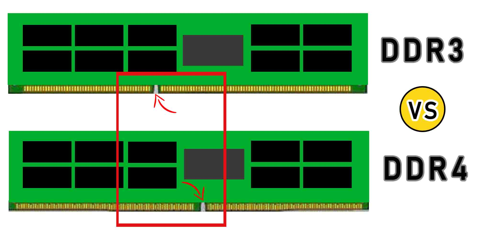

|  | Double Data Rate 3 Synchronous Dynamic Random-Access Memory (DDR3 SDRAM) is a type of synchronous dynamic random-access memory (SDRAM) with a high bandwidth ("double data rate") interface, and has been in use since 2007. It is the higher-speed successor to DDR and DDR2 and predecessor to DDR4 synchronous dynamic random-access memory (SDRAM) chips. DDR3 SDRAM is neither forward nor backward compatible with any earlier type of random-access memory (RAM) because of different signaling voltages, timings, and other factors. |
DDR3 is a DRAM interface specification. The actual DRAM arrays that store the data are similar to earlier types, with similar performance. The primary benefit of DDR3 SDRAM over its immediate predecessor, DDR2 SDRAM, is its ability to transfer data at twice the rate (eight times the speed of its internal memory arrays), enabling higher bandwidth or peak data rates. |
|
Meanwhile, Double Data Rate 4 Synchronous Dynamic Random-Access Memory (DDR4 SDRAM) is a type of synchronous dynamic random-access memory with a high bandwidth ("double data rate") interface. The primary advantages of DDR4 over its predecessor, DDR3, include higher module density and lower voltage requirements, coupled with higher data rate transfer speeds. The DDR4 standard allows for DIMMs of up to 64 GB in capacity, compared to DDR3's maximum of 16 GB per DIMM. |
|